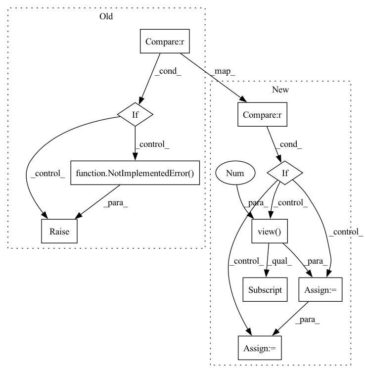

Pattern ID :20453

Before Change
if not self.deterministic
else actor_critic_output.distributions.mode()
)
if self.teacher_forcing is not None and self.teacher_forcing() > 0:
raise NotImplementedError()
// teacher_forcing_mask = torch.bernoulli(actions.shape, p=self.teacher_forcing())
// teacher_forcing_mask *= step_observation["expert_actions"]
// actions = teacher_forcing_mask * step_observation["expert_actions"] + (1-teacher_forcing_mask)
After Change
if not self.deterministic
else actor_critic_output.distributions.mode()
)
if (
self.teacher_forcing is not None
and self.teacher_forcing(self.rollout_count) > 0
):
tf_mask_shape = step_observation["expert_action"].shape[:-1] + (1,)
expert_actions = (
step_observation["expert_action"].view(-1, 2)[:, 0].view(*tf_mask_shape)
)
expert_action_exists_mask = (
step_observation["expert_action"].view(-1, 2)[:, 1].view(*tf_mask_shape)
)
teacher_forcing_mask = (
torch.distributions.bernoulli.Bernoulli(
torch.tensor(self.teacher_forcing(self.rollout_count))
)
.sample(tf_mask_shape)
.long()
.to(self.device)
) * expert_action_exists_mask
actions = (
teacher_forcing_mask * expert_actions
+ (1 - teacher_forcing_mask) * actions
)
In pattern: SUPERPATTERN
Frequency: 3
Non-data size: 10
Instances
Fragment ID: 66185649
Project Name: allenai/allenact
Commit Name: 8e313465b05e6546339b02ea73bc1ded059bab14
Time: 2020-01-20
Author: lucaw@allenai.org
File Name: onpolicy_sync/trainer.py
M Class Name: Trainer
N Class Name: Trainer
M Method Name: collect_rollout_step(2)
N Method Name: collect_rollout_step(2)
M Parent Class:
N Parent Class:
M File Name: onpolicy_sync/trainer.py
N File Name: onpolicy_sync/trainer.py
M Start Line: 168
M End Line: 194
N Start Line: 184
N End Line: 213
'>
Before Change
if not self.are_parameters_frozen:
self.randomize_parameters(cloned_samples, sample_rate)
return self.apply_transform(cloned_samples, sample_rate)
elif self.mode == "per_channel":
raise NotImplementedError() // TODO
else:
raise Exception("Invalid mode")
else:
After Change
if not self.are_parameters_frozen:
self.randomize_parameters(cloned_samples, sample_rate)
return self.apply_transform(cloned_samples, sample_rate)
elif self.mode == "per_channel":
batch_size = cloned_samples.shape[0]
num_channels = cloned_samples.shape[1]
cloned_samples = cloned_samples.view(
batch_size * num_channels, 1, cloned_samples.shape[2]
)
if not self.are_parameters_frozen:
self.randomize_parameters(cloned_samples, sample_rate)
perturbed_samples = self.apply_transform(cloned_samples, sample_rate)
perturbed_samples = perturbed_samples.view(
batch_size, num_channels, cloned_samples.shape[2]
)
return perturbed_samples
else:
raise Exception("Invalid mode")
'>
Fragment ID: 66185593
Project Name: asteroid-team/torch-audiomentations
Commit Name: 5381f525146d60ecaa1daa052dc906e6df4bc801
Time: 2020-10-27
Author: iver56@hotmail.com
File Name: torch_audiomentations/core/transforms_interface.py
M Class Name: BaseWaveformTransform
N Class Name: BaseWaveformTransform
M Method Name: forward(3)
N Method Name: forward(3)
M Parent Class: torch.nn.Module
N Parent Class: torch.nn.Module
M File Name: torch_audiomentations/core/transforms_interface.py
N File Name: torch_audiomentations/core/transforms_interface.py
M Start Line: 191
M End Line: 194
N Start Line: 116
N End Line: 208
'>
Before Change
else:
raise Exception("Invalid mode/p_mode combination")
elif self.p_mode == "per_batch":
if self.mode == "per_batch":
raise NotImplementedError()
elif self.mode == "per_example":
raise NotImplementedError()
elif self.mode == "per_channel":
raise NotImplementedError()
else:
raise Exception("Invalid mode")
After Change
else:
raise Exception("Invalid mode/p_mode combination")
elif self.p_mode == "per_batch":
if self.mode == "per_batch":
batch_size = cloned_samples.shape[0]
num_channels = cloned_samples.shape[1]
cloned_samples = cloned_samples.view(
1, batch_size * num_channels, cloned_samples.shape[2]
)
if not self.are_parameters_frozen:
self.randomize_parameters(cloned_samples, sample_rate)
perturbed_samples = self.apply_transform(cloned_samples, sample_rate)
perturbed_samples = perturbed_samples.view(
batch_size, num_channels, cloned_samples.shape[2]
)
return perturbed_samples
elif self.mode == "per_example":
if not self.are_parameters_frozen:
'>
Fragment ID: 66185598
Project Name: asteroid-team/torch-audiomentations
Commit Name: 042316421b72a3bff8168be9e8fdf324b233e22b
Time: 2020-10-27
Author: iver56@hotmail.com
File Name: torch_audiomentations/core/transforms_interface.py
M Class Name: BaseWaveformTransform
N Class Name: BaseWaveformTransform
M Method Name: forward(3)
N Method Name: forward(3)
M Parent Class: torch.nn.Module
N Parent Class: torch.nn.Module
M File Name: torch_audiomentations/core/transforms_interface.py
N File Name: torch_audiomentations/core/transforms_interface.py
M Start Line: 173
M End Line: 181
N Start Line: 116
N End Line: 195